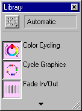
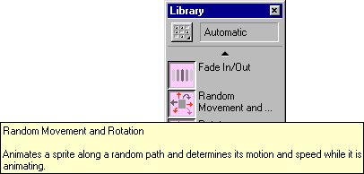
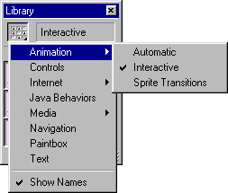

Using Director > Director 8 Tutorial > Attach behaviors to sprites
Using Director > Director 8 Tutorial > Attach behaviors to sprites |
Attach behaviors to sprites
Director drag-and-drop behaviors offer functionality beyond what you can accomplish by simply dragging sprites to the Stage and Score. Behaviors also add intelligence and flexibility to a movie.
Instead of playing a series of frames exactly as the Score dictates, a behavior can control the movie in response to specific conditions and events.
In this tutorial, you will use behaviors to make a bee move randomly around a flower and also follow the movements of the user's mouse pointer.
When attaching behaviors to an entire sprite, rather than a frame, you can drag the behavior to the sprite in the Score or on the Stage.
1 |
Click frame 175 of channel 8 in the Score. |
2 |
Drag the bee cast member to the Stage, close to the flower, and shorten the sprite to frame 180. |
In addition to using the Property Inspector, you can drag a sprite's end frame to shorten or extend the sprite. |
|
3 |
If the Library palette is not visible, choose Window > Library palette.
 |
The Library palette displays categories containing all behaviors included with Director. The name of the active category appears in the Library List field at the top of the palette. |
|
The name of each behavior appears next to an icon indicating its type. |
|
4 |
Verify that you're in the Automatic category in the Library List field. Scroll down to the  |
5 |
Drag the |
Now you'll add another behavior to the bee, but you'll drag the behavior to the sprite on the Stage. You'll add the |
|
6 |
Select Animation > Interactive from the Library List pop-up menu.
 |
7 |
Scroll down to the |
Notice that a shaded rectangle appears around the selected sprite as you drag the behavior on top of it. |
|
8 |
In the Parameters dialog box, from the middle pop-up menu, select Always and click OK. |
You attach behaviors to frames for actions that affect how the movie, rather than a particular sprite, behaves. Now you'll attach a behavior that makes the last frame of the movie play repeatedly. |
|
9 |
From the Library List pop-up menu, choose Navigation. |
10 |
Scroll down to the |
11 |
Rewind and play the movie. |
Notice that when the movie reaches the last frame, it continues to play. |
|
Remember to save your work frequently. |
|